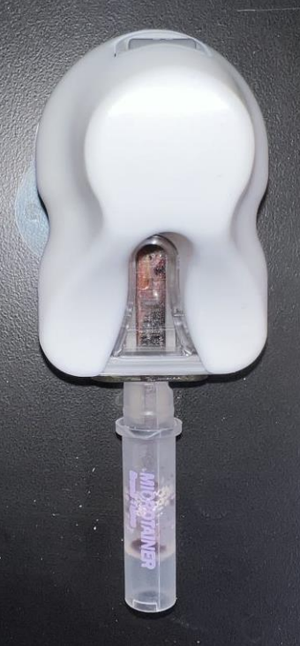
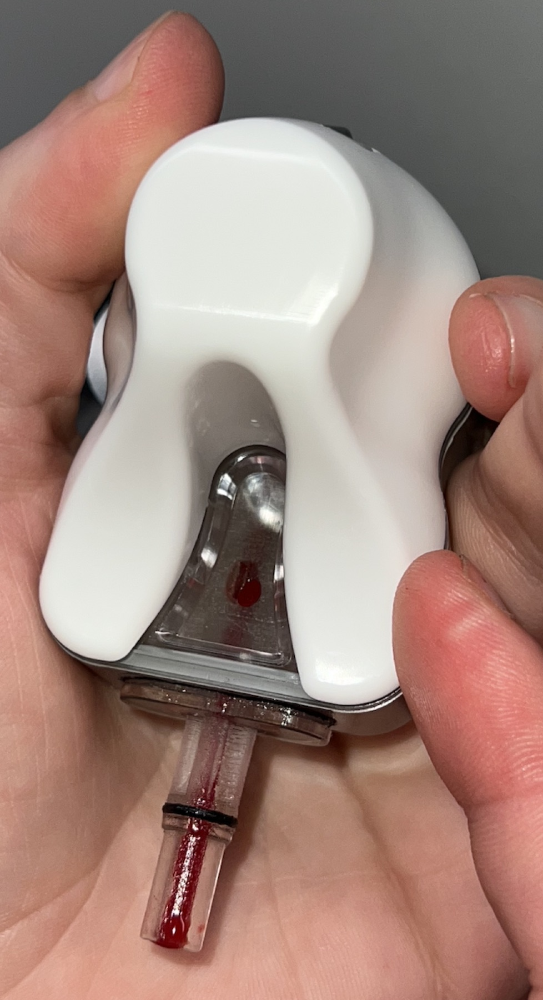
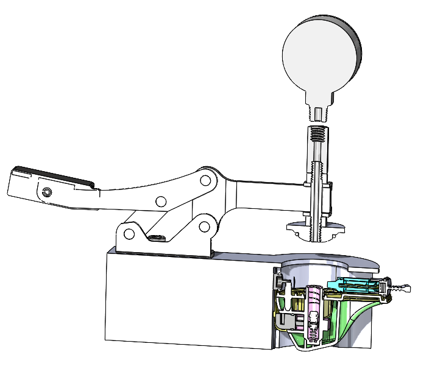
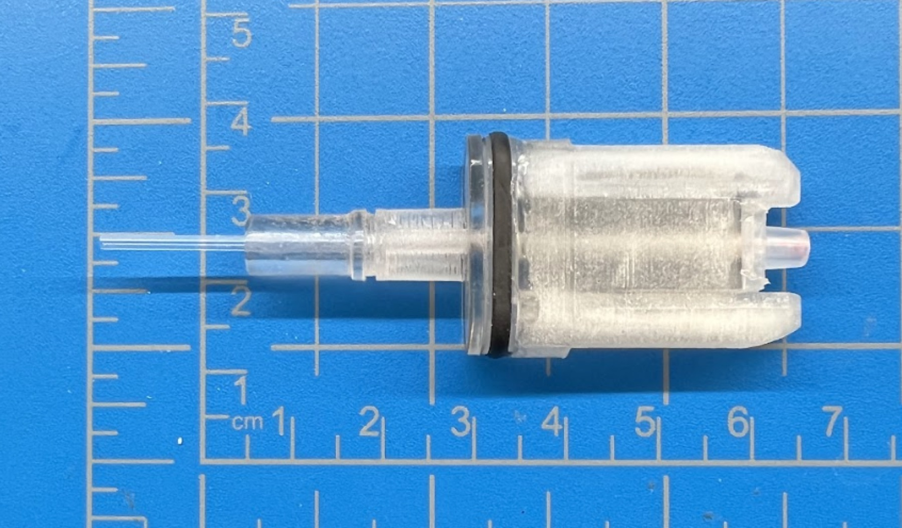
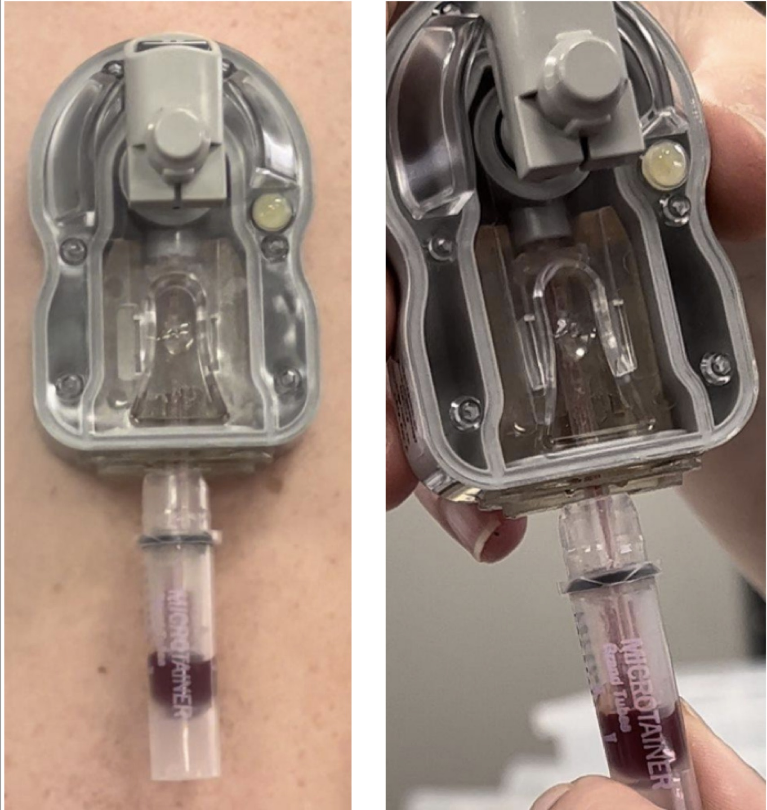

Rethinking an At-Home Blood Draw Device
During my summer internship at Gener8, I was always eager to learn about the various projects happening in the lab. One day, while chatting with a coworker, I learned about an at-home blood draw device that had been put on hold due to disappointing results. Intrigued by the project, I asked to contribute in my spare time, and I was given the opportunity to lead a new round of innovation for this abandoned device.

The vacuum-based device faced a significant challenge: it wasn’t generating enough pressure to draw the necessary volume of blood for testing. Additionally, the internal cartridge was leaking due to improper venting, which led to even more inefficiencies.

To tackle these issues, I designed a fixture that held the device securely while measuring internal pressure against the skin interface over time. This method informed a revised venting design that enhanced blood wicking through the capillary tube while preventing pooling inside the cartridge.

Through testing, I identified two major inefficiencies at the seals between the internal cartridge and the external shell. To address these, I incorporated an over-molded o-ring and a tapered top, which created tighter seals against the shell.

Throughout these design iterations, I conducted tests on volunteer human subjects. The results with the new design were promising: one successful test yielded over 400 mL of blood in just 7 minutes! In contrast, the device had only collected about 50-100 mL when I first joined the project just a few weeks earlier.

I presented my findings weekly to our customer, the CEO of Drawbridge. I attached one of my updates below.
By the end of my internship, two full-time employees had been assigned to continue the project I had revitalized. To ensure a smooth transition, I created thorough documentation outlining the assembly protocol, ideas for future steps, and insights from previous attempts that hadn’t succeeded.
Blood Draw Project Handoff Documentation
I am proud to share that a similar device I helped work on was brought to market by Drawbridge (check it out here). With continued iteration, I hope this version will become publicly available as well!